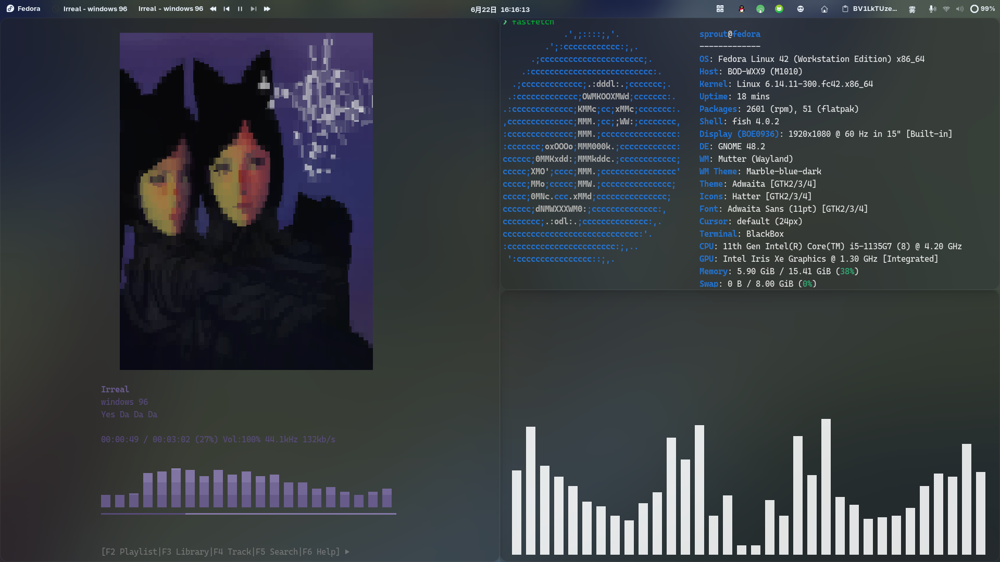

先看最终效果，如
BV1LkTUzeEtn
所示
截图：

美吧？😋
Gnome美化离不开扩展
Blur my Shell
:
为你能看到的大部分东西增加模糊效果，接近MacOS的效果
建议顶栏、概览的管线设置为「本地高斯模糊：半径60,亮度1.00」
应用程序方面：「应用程序模糊：强度95,亮度1.00,不透明度220,启用概述上的模糊」。建议使用模糊效果的应用有：org.gnome.Nautilus、QQ、Code、以及终端
Dash to Dock
顾名思义，添加Dock栏
返回首页